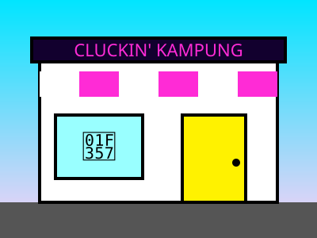

About Us
The legend, the lorry and the fryers.
🖼 Shop_Photo.bmp_ □ ✕

Our Flagship
Pink awning, loud fryers, louder jokes. Our first proper shop is part dine-in diner, part central kitchen feeding offices, campuses and kenduri across Selangor and KL.
- ✅ 100% halal chicken, delivered fresh daily
- ✅ 18-hour buttermilk brine, hand-breaded to order
- ✅ Catering crew for 20 to 500 guests
📜 Company_History.doc_ □ ✕
Past & Current Experience
- 2023 | Pasar Malam Lorry Stall. Tested 20+ spice rubs on 3,000+ hungry customers. One sambal recipe went locally viral.
- 2025 | Cloud Kitchen & Campus Catering. Bulk bento boxes for hackathons, seminars and society events.
- 2026 - now | Flagship Shop. Dine-in, takeaway, online ordering and full event buffets.
Services We Offer
- 🍽 Dine-in and express takeaway
- 🍱 Corporate and campus bento delivery
- 🎉 Full-service event buffets
- 🤡 Custom meme-ified order boxes
One does not simply eat just one piece